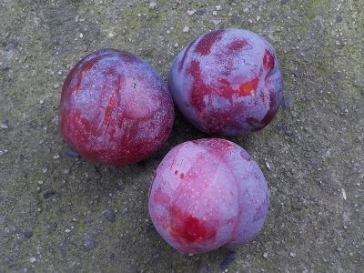
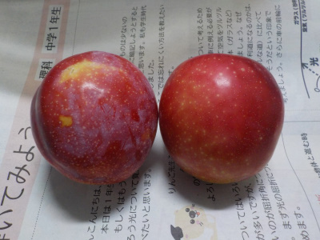
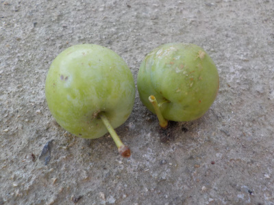
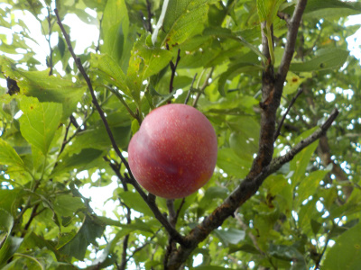
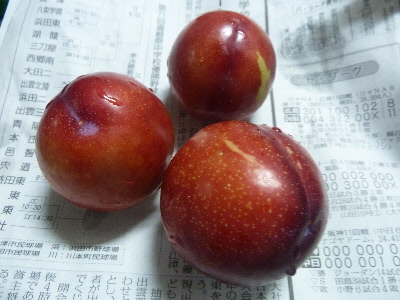
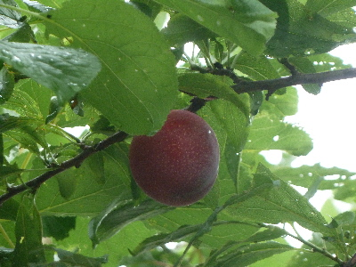
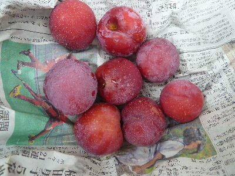
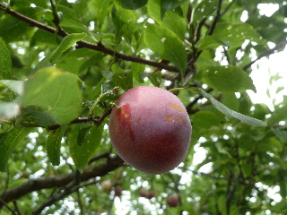

甘くて美味しいスモモも時期が始まりました。
更新日 : 2026/07/05

これくらい熟れてると甘くてとっても美味しかったです。
実が次々熟れるのが楽しみです。
更新日 : 2026/07/05

これくらい熟れてると甘くてとっても美味しかったです。
実が次々熟れるのが楽しみです。
更新日 : 2022/07/07

赤くなったので収獲したんですが、まだ固かったです。
もうちょっと置いて、柔らかくなってから食べようと思います。
更新日 : 2021/05/29

昨晩、強風と豪雨があったのでスモモの実が落ちました。
自然のことなので仕方ないです。
更新日 : 2019/07/14

でもポロポロ落っことしました。
よく熟れたスモモは振動でも落ちるので採るのが難しいです。
落とした分は痛みやすいのですぐ食べました。
更新日 : 2017/07/02

ちょっと青いですが収獲しました。
熟れたら食べます。
虫に食べられるとか、自然に落ちるのを思うとこれくらいが丁度いいかな。
更新日 : 2016/07/03

いい色になったので収穫です。

今年はちょっと実が多いかな。
今日はこれだけ収獲しました。
更新日 : 2015/07/11

すももがいい色になりました。
完熟まで木につけてると、昆虫に食べられちゃうので早めに収穫します。
すももは果汁が多くて美味しいです。
桃と違って袋掛けがないのがいい。ゾウムシ被害も少なくていい。